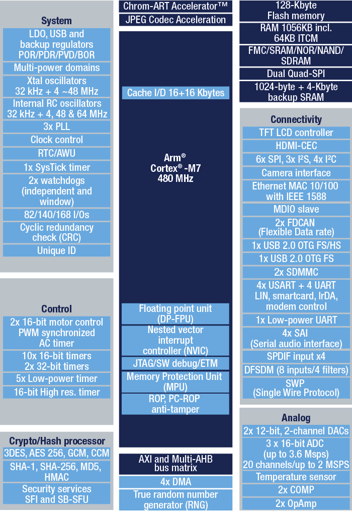

STM32H750¶
标签 : Cortex-M7 480 MHz 16bit-ADC USB-HS-OTG HDMI-CEC QSPI 11 UART
Xin简介¶
规格参数¶
基本参数¶
发布时间：
参考价格：$3.5
制程工艺：40nm
供货周期：
封装规格：LQFP144/LQFP176/UFBGA176/UFBGA169/UFBGA144/TFBGA100/LQFP100(14×14mm)
运行环境：-40°C to 85°C
RAM容量：1 MB
Flash容量：128 KB
Note
STM32H750 作为超值系列降低了内部Flash配置，但并不是flashless芯片
特征参数¶
芯片架构¶
DFSDM¶
内部集成DFSDM数字滤波模块，配合Σ-Δ器件的使用，可进行高精度、高速率的AD测量
Xin选择¶
品牌对比¶
STM32H7系列的主要竞争对手是NXP的i.MX RT系列 RT1060
STM32H7支持32位SDRAM，RT1050仅支持16位SDRAM
STM32H7有JPEG硬解，RT的分辨率是1368*768，STM32H7是1024*768
RT带的两个USB都带高速PHY
RT1060 带双网口，STM32H7系列仅一个
型号对比¶

H7系列关键参数对比¶
OctoSPI |
Ethernet |
||
1 MB RAM |
480MHz |
||
1.4 MB RAM |
超值系列关键对比¶
RAM |
Cache |
GPU |
SPI |
USB |
Ethernet |
Interface |
||
|---|---|---|---|---|---|---|---|---|
1177 |
564KB |
32+32 |
ART |
2 Octo |
100M |
35 |
||
1027 |
1 MB |
16+16 |
ART |
2 Quad |
100M |
35 |
||
599 |
1.4 MB |
16+16 |
ART/JPEG |
2 Quad |
No |
35 |